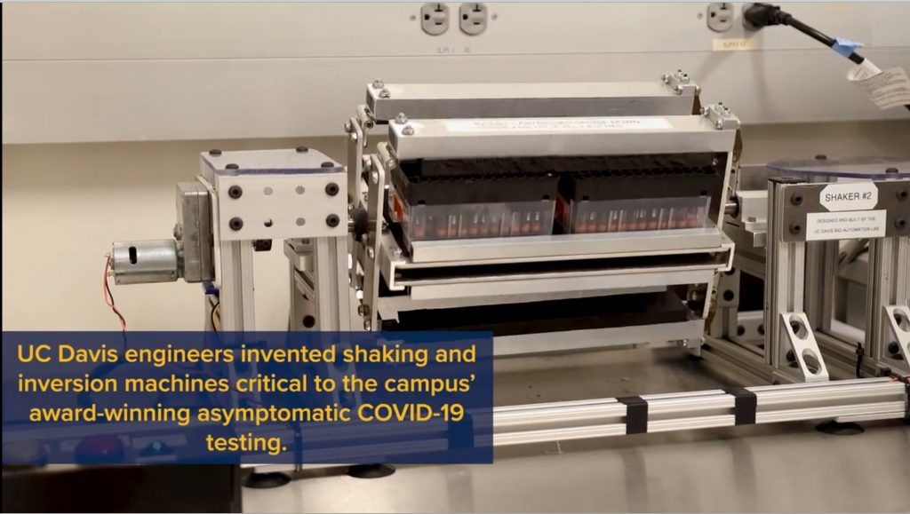

Rotator-mixer for COVID-19 testing

UC Davis engineers built shaking and inversion machines that became part of the Genome Center’s asymptomatic COVID-19 testing. Dennis Sadowski, Stavros Vougioukas, and postdoctoral researcher Zhenghao Fei designed and built them in six weeks. The machines prepare saliva samples so they can be tested for the virus.
A key step is mixing viscous saliva with papain protease, an enzyme that makes the sample less sticky so it can be pipetted later. Saliva is thick enough that the tubes have to be shaken and inverted hard for the enzyme to mix through.
The shakers do that automatically. Each handles 768 samples at a time, across eight cartridges: three seconds of shaking, a 180-degree rotation, and another shake, repeated 50 times, about five minutes. After deployment in February 2021, the two machines handled on the order of 3,000 to 4,000 samples a day. Froenicke, the Genome Center’s DNA Tech Core manager who oversaw the testing lab, said the samples were then pipettable without trouble, and that this step is what made the rest of the assay possible.